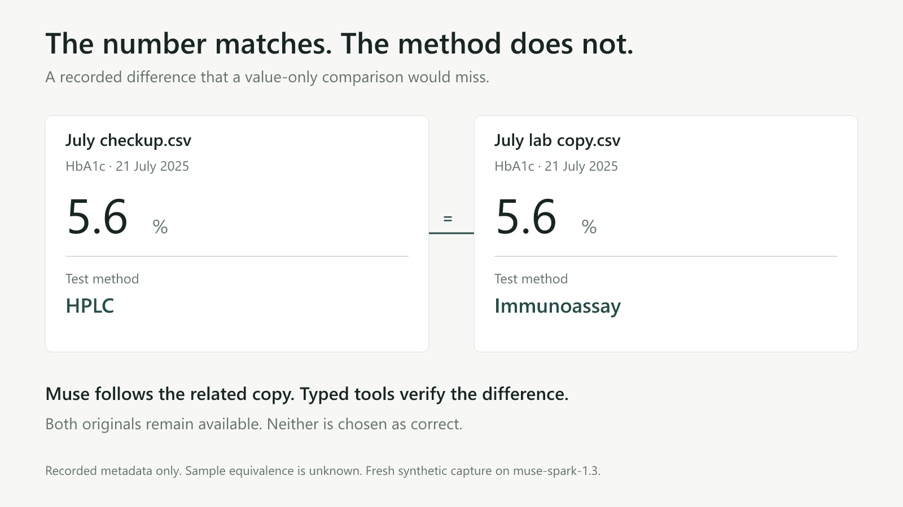
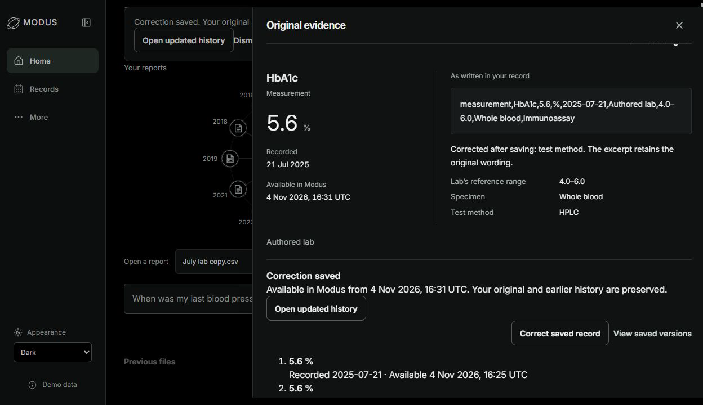
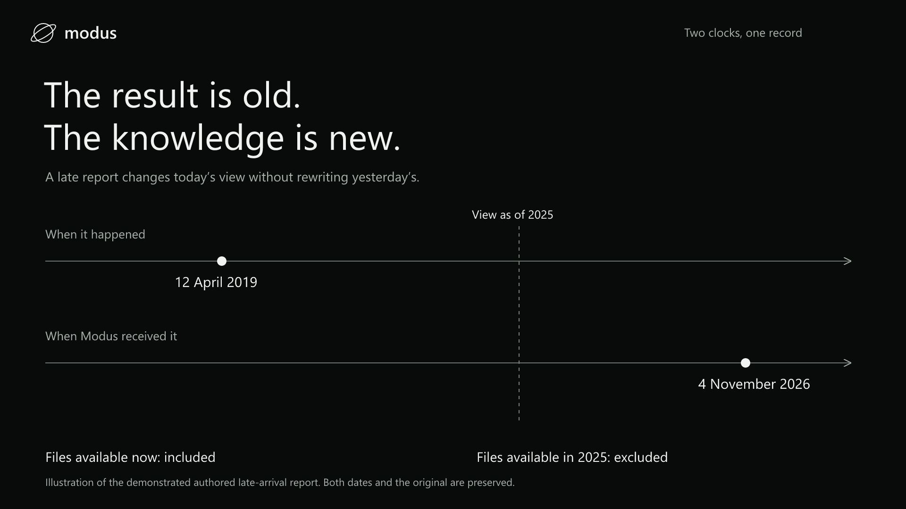
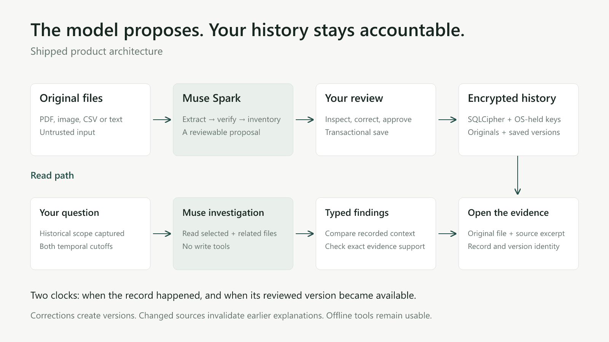

A matching value can still hide a difference.
Muse follows the selected reports into a related copy. The numbers match, but the recorded test methods differ. Open either source and inspect the wording yourself.
Modus preserves both reports and withholds a numerical comparison when the context is uncertain.
Inspect the agent contract
Correct today’s record.
Keep yesterday’s evidence.
A saved correction creates a new version. The original file stays unchanged, earlier views remain available, and an explanation using the corrected source must refresh.

Actual authored correction demonstration. This edit does not decide which report is correct.
History has two clocks.
What happened and what was known are separate. A late-arriving report can update your current history without rewriting an earlier knowledge view.

A history system around the model.
Muse reads and investigates. Typed tools check the records and comparisons. You review every record write. Encrypted local storage retains originals and revisions.
